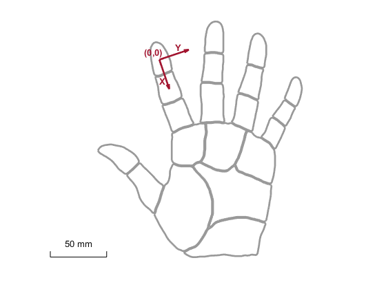
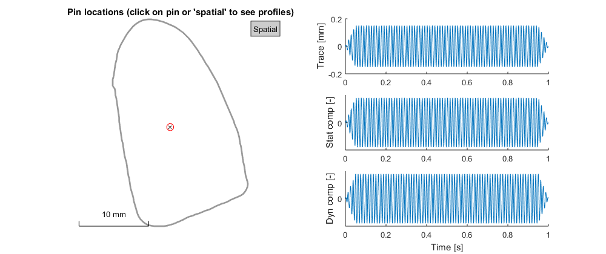
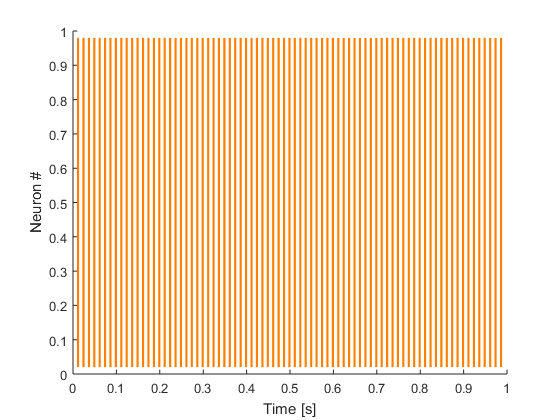
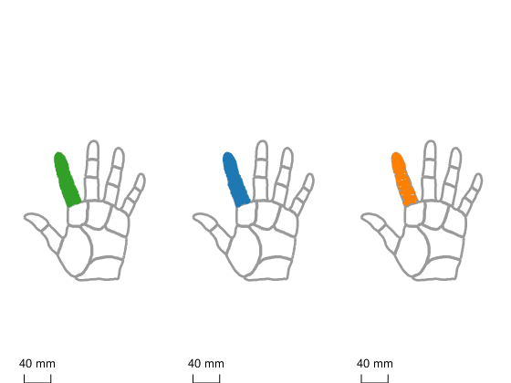
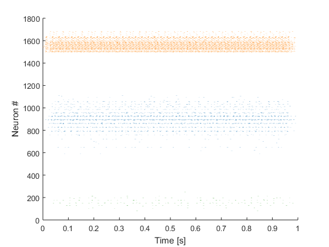
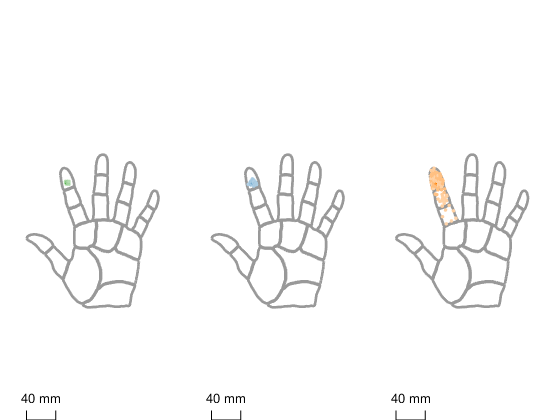

Contents
Understanding the hand coordinate system
Afferent and stimulus locations are expressed in a 2D coordinate system that is centered on the tip of the index finger, with the first axis running along the index finger and the second axis orthogonal to that.
figure
plot_hand('axes',1)
ans = 126.9860 452.0624
When no locations are given Afferent and Stimulus objects are automatically placed at the origin, i.e. the index fingertip.
Setup a single afferent and stimulus, and calculate response
This example creates a single PC afferents, manually creates a simple stimulus, and then calculates the response.
% Create a PC afferent a = Afferent('PC','idx',1); % Generate a 80 Hz sine wave with 150 um amplitude sf = 5000; t = (1/sf:1/sf:1)'; trace = sin(2*pi*80*t)*0.15; rad = 0.5;% pin with 0.5 mm radius xy = [0 0]; % pin coordinate s = Stimulus(trace,xy,sf,rad); % Calculate response r = a.response(s); % Show response r.rate
Warning: Negative indentation found: proceed with caution !
ans =
81
For commonly used stimuli, such as ramp-and-hold stimuli and sinusoidal vibrations, the model includes functions that allow generating such stimuli easily.
% generate the same stimulus using the stim_sine function:
s = stim_sine(80,.15);
plot(s)
Warning: Negative indentation found: proceed with caution !
% Move stimulus 5 mm away and calculate response. s = stim_sine(80,.15,[],[],[5 0]); r2 = a.response(s); r2.rate % Plot response figure plot(r2)
Warning: Negative indentation found: proceed with caution !
ans =
79
 Setup an afferent population and calculate response
% Generate a population of afferents located on the index finger a = affpop_hand('D2'); % Count number of PC receptors sum(a.iPC)
ans = 186
% Plot location of receptors
figure
plot(a)
 % calculate response r = a.response(s); % plot response (spike raster) figure plot(r)
% plot response intensity figure rates=r.rate; rates(a.iSA1)=rates(a.iSA1)/max(rates(a.iSA1)); rates(a.iRA)=rates(a.iRA)/max(rates(a.iRA)); rates(a.iPC)=rates(a.iPC)/max(rates(a.iPC)); plot(a,[],'rate',rates)